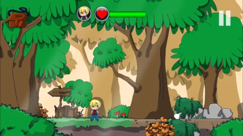
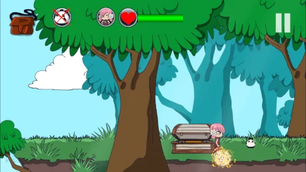

Celestwald · Das erste Abenteuer


Aus den App-Stores
Google Play
2.9
50K+
Store-Seite und Rezensionen ansehenApp Store
4.8
Store-Seite und Rezensionen ansehenBewertungen werden je Store getrennt angezeigt und können je nach Land und Zeitpunkt abweichen.
Über das Spiel
Hilf dem jungen Alchemisten-Lehrling, der sich aufmacht, die magischen Samen des „Traumbaums“ zu sammeln · einer wunderbaren Pflanze, die tief im Wald wächst.
Gemeinsam mit Großmeister Theo entdeckst du neue Orte, sammelst seltsame Objekte und löst liebevoll gestaltete Rätsel. Beobachtung, Logik und Neugier sind deine besten Verbündeten.
Die handgezeichneten Illustrationen und die atmosphärische Musik, komponiert von Eric Matyas, erwecken Celestwald zum Leben.
Im Spiel
Puzzles & Rätsel
Löse originelle Rätsel, um im geheimnisvollen Wald weiterzukommen.
Wunderschöne Illustrationen
Jede Szene wurde liebevoll von Hand gezeichnet , stimmungsvoll und einzigartig.

Brauchst du Hilfe?
Offizielle Komplettlösungs-Videos helfen dir bei schwierigen Stellen.
